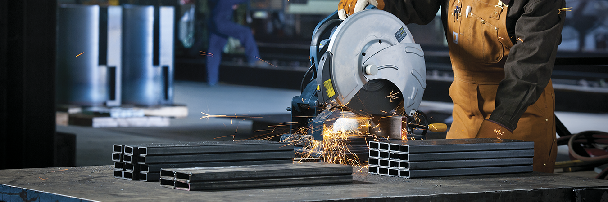
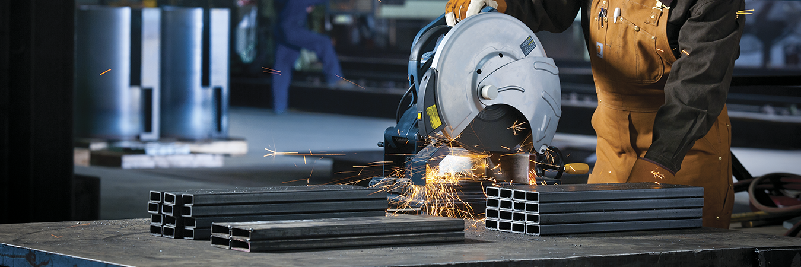

Somos expertos en la supervisión de construcción y el aseguramiento de calidad (J&k Machineri EIRL) de diversos componentes e instalaciones para proyectos mineros de los países donde nos encontramos. Nuestra experiencia incluye proyectos tales como plantas de tratamiento, plantas de procesos, plataformas de lixiviación, instalaciones para el manejo de agua, residuos y relaves. Así como, depósitos de desmonte, instalaciones para relleno sanitario, entre otros.

Mantenimiento Industrial
En J&K Machinery EIRL
contamos con profesionales altamente capacitados en mantenimiento industrial
para un rendimiento ininterrumpido.
J&K Machinery somos tu empresa de mantenimiento industrial, con experiencia en el sector; esencial para la operación
eficiente y continua de tus instalaciones.

Obras Eléctricas
En J&K Marchiney EIRL proporcionamos servicios de alta calidad y soluciones innovadoras para diversas necesidades industriales y comerciales. Nuestra experiencia abarca desde la instalación y mantenimiento de sistemas eléctricos complejos, hasta la implementación de proyectos de automatización y eficiencia energética.

Montajes y Desmontajes
J&K Machinery EIRL es especialista en montajes y desmontajes de estructuras industriales y comerciales. Nuestro equipo capacitado se encarga de realizar estas tareas con precisión y seguridad, asegurando un servicio eficiente y de alta calidad. Confía en nosotros para manejar proyectos complejos con profesionalismo y dedicación.